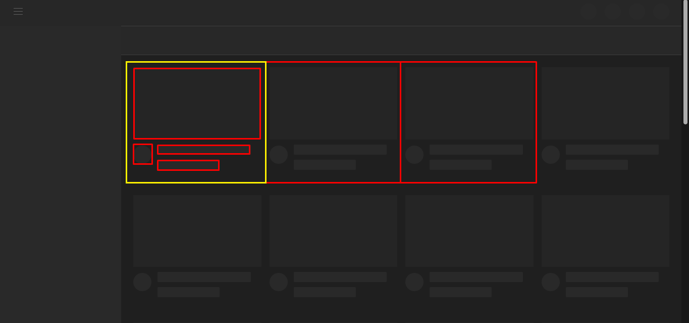

Componentes permitem você dividir a UI em partes independentes, reutilizáveis e pensar em cada parte isoladamente.
Vantagens: Evita a replicação de código;
Um exemplo do uso de componentes seria esse card do youtube:

O card amarelo seria o componente, as caixas menores dentro seriam propriedades de fácil alteração, de vídeo para vídeo. Note que o modelo é o mesmo, mas de acordo com o conteúdo (ex. o tamanho do título), uma caixinha pode ficar um pouco diferente da outra, mas sempre começam pelo mesmo modelo.